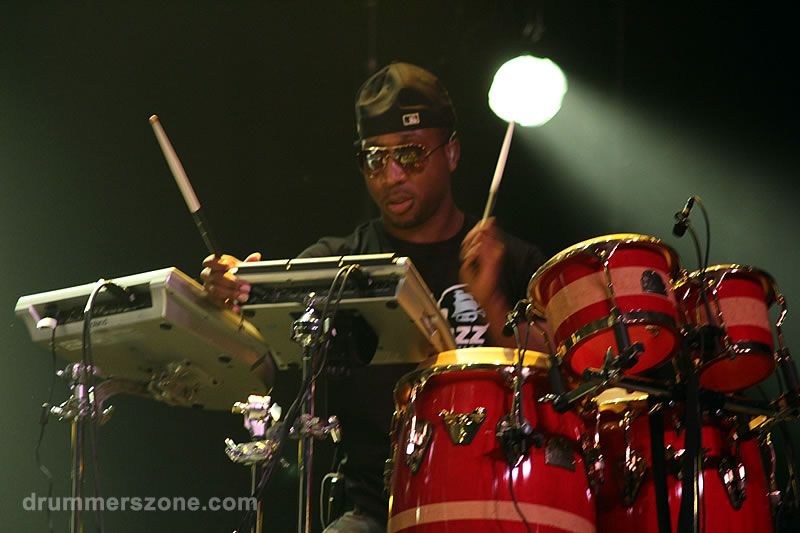
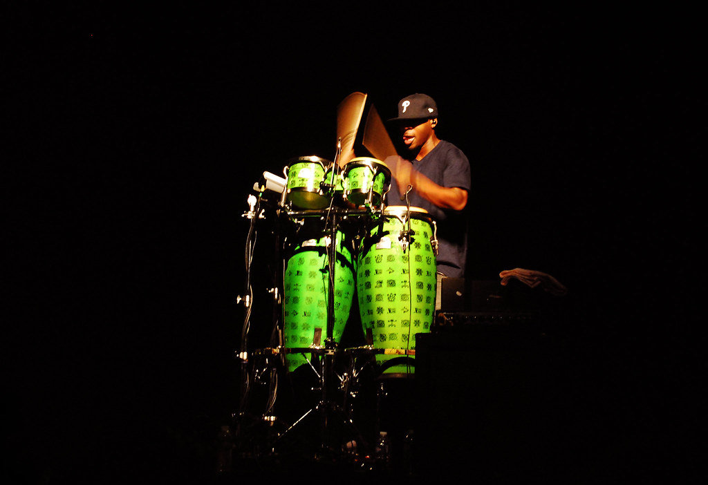
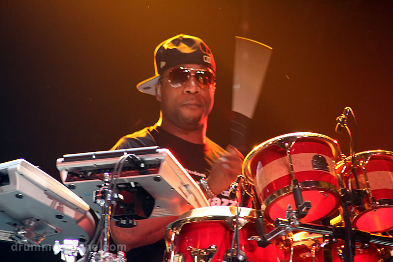

Frank "Knuckles" Walker is a world-class drummer, percussionist, and music producer with nearly two decades at the highest levels of live performance, recording, and television. Born in Kingston, Jamaica, Frank moved to Philadelphia with his family, where he discovered his passion for music playing drums in church at age 13. By 19, he was touring professionally.
His breakthrough came when he was tapped to join D'Angelo's legendary "Voodoo" tour (circa 1999–2000). His talent and relentless work ethic led to touring engagements with a who's who of music: Erykah Badu, Alicia Keys, Glen Lewis, and Kanye West, among many others.
Frank's career-defining chapter began when he joined The Legendary Roots Crew as their percussionist in 2001/2002, where he spent 17 years as an integral member. During his tenure, The Roots released multiple critically acclaimed, Grammy-nominated and Grammy-winning albums and became the house band for NBC's Late Night with Jimmy Fallon (2009) and later The Tonight Show Starring Jimmy Fallon (2014). Frank performed on the show five nights a week for approximately 8 years, performing alongside the biggest names in entertainment.
Today, Frank is focused on music production (having worked with artists like Kanye West and Swae Lee of Rae Sremmurd), motivational speaking, and pursuing opportunities in TV, film, and voice acting from his base in Los Angeles.

Epic drum battle in Prague showcasing Frank's incredible technique and showmanship.
Questlove and Frank Knuckles trade mind-blowing drum solos.
Jimmy Fallon, Metallica & The Roots perform "Enter Sandman" with classroom instruments.
Jimmy Fallon, Ed Sheeran & The Roots perform with classroom instruments.
For booking, management inquiries, and press opportunities.
